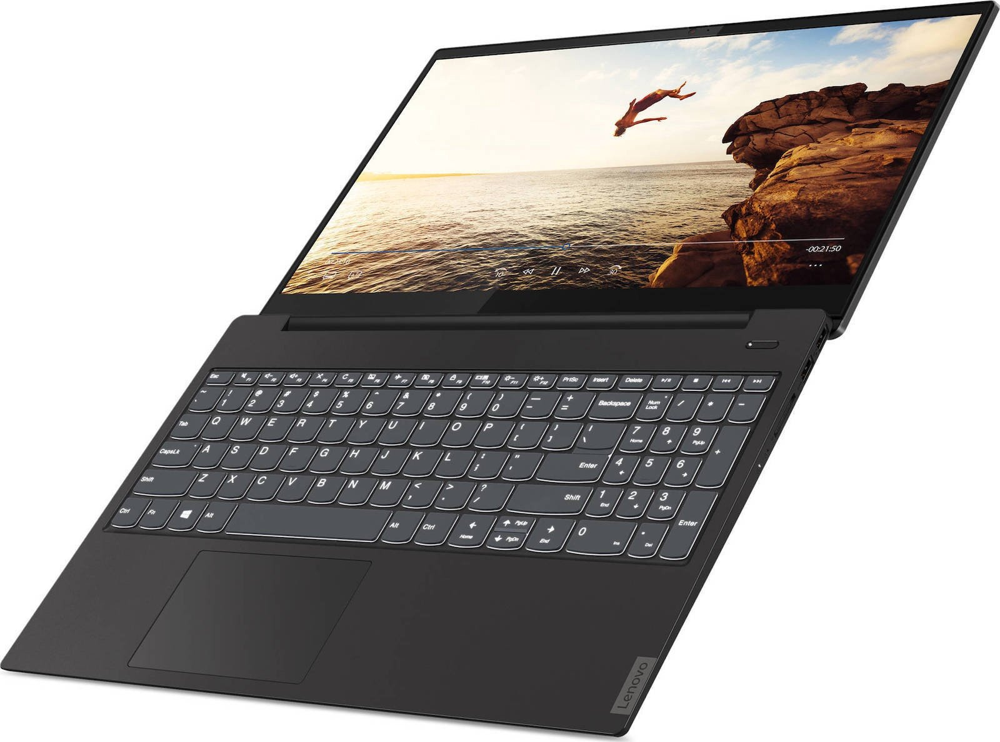

Welcome to nešiojamas kompiuteris
Nešiojami kompiuteriai ASUS, LENOVO, DELL | nešiojamieji kompiute | Fortakas.lt
2020.10.28 12:42
Fortakas 8 700 30 100 Fortakas.Pagalba pagalba@fortakas.lt Susisiekite Verslo skyrius Kontaktai Paslaugos Kompiuterių taisymas Duomenų atkūrimas Kompiuterių valymas Telefonų ir planšečių stikliukų keitimas Bankrutavusių įmonių garantinis servisas Telefonijos sprendimai Draudimas ir pratęsta garantija Informacija Atsiskaitymo būdai Prekių pristatymas Prekių grąžinimas Prekių garantija Rekvizitai PIRKIMO TAISYKLĖS Privatumo taisyklės Tax free Prisijungti Apie mus Kontaktai Paslaugos Informacija Prisijungti Krepšelis tuščias
Krepšelis
0" prekės prekė (tuščia)Nėra prekių
0,00 € Pristatymas
0,00 € Mokesčiai
0,00 € Viso
Kainos su mokesčiais
Pirkti
Siekiant užtikrinti aukštą teikiamų paslaugų kokybę, fortakas.lt svetainėje yra naudojami slapukai (angl. cookies). Išjungdami šį pranešimą arba toliau naršydami šioje svetainėje sutinkate su fortakas.lt slapukų naudojimo politika. Supratau, uždaryti AKCIJOS Akcija Išpardavimas KOMPIUTERIAI IR KOMPONENTAI Nešiojami kompiuteriai ir priedai Nešiojami kompiuteriai Atnaujinti nešiojami kompiuteriai Krepšiai ir dėklai Nešiojamų kompiuterių dalys Nešiojamų kompiuterių priedai Nešiojamų kompiuterių maitinimo šaltiniai (pakrovėjai) Garantijos išplėtimas Planšetiniai kompiuteriai ir jų priedai Planšetiniai kompiuteriai Planšetinių kompiuterių dėklai Planšetinių kompiuterių laikikliai Pakrovėjai Kiti planšečių priedai Paslaugos Grafinės planšetės Grafinių planšetų priedai Elektroninės skaityklės ir jų priedai Dėklai Kiti priedai Darbinės stotys Komponentai Stacionarūs kompiuteriai Fortako stacionarūs kompiuteriai Firminiai stacionarūs kompiuteriai AIO kompiuteriai Fortako AIO kompiuteriai Firminiai AIO kompiuteriai NUC kompiuteriai Nuc kompiuterių komponentai Fortako NUC kompiuteriai Firminiai NUC kompiuteriai Serveriai Rack tipo tinklinės duomenų saugyklos, NAS Serverių komponentai Kompiuterių komponentai Įvesties/išvesties išplėtimo plokštės Kompiuterių platformos (Barebone) Aušinimo sistemos ir aksesuarai (COOLERS) Vaizdo plokštės Pagrindinės plokštės Vidiniai kietieji diskai SSD Procesoriai Operatyvioji atmintis (RAM) Vidiniai kietieji diskai HDD Optiniai įrenginiai (ODD) Garso plokštės Maitinimo blokai (PSU) Korpusai (CASE) Kortelių skaitytuvai KOMPIUTERIŲ PRIEDAI IR LAIKMENOS Monitoriai Įvesties įrenginiai Klaviatūros Pelės Rinkiniai (klaviatūra ir pelė) Pelių kilimėliai Garso kolonėlės Bevielės kolonėlės Internetinės kameros Ausinės Mikrofonai Išorinės duomenų laikmenos HDD dėklai Išoriniai kietieji diskai Atminties kortelės USB atmintukai Duomenų laikmenos CD, DVD, BD Tinkliniai diskai (NAS) Duomenų saugojimo sistemos ir jų priedai Kompiuterių priedai ir aksesuarai Laikikliai Įrankiai Kita Patogumo prekės Kiti kompiuterių priedai TV tuneriai Papildomos plokštės ir valdikliai USB šviestuvai Kabeliai, adapteriai ir priedai Bluetooth adapteriai Kabeliai, šakotuvai, perėjimai Kiti priedai DVI/VGA/HDMI/DISPLAYPORT kabeliai ir adapteriai Vaizdo, garso kabeliai ir šakotuvai Sata,eSata,SAS maitinimo ir duomenų kabeliai Tinklo kabeliai (UTP,Fibre,Dsl) Programinė įranga Kompiuterių operacinės sistemos Biuro programos Saugumo programinė įranga Grafikos programos PDF redagavimo programos Pagalbinės programos Serverių programinė įranga Kitos programos UPS įrenginiai, baterijos, filtrai ir kiti priedai UPS įrenginiai Maitinimo, viršįtampių filtrai, panelės(PDU), prailgintuvai VRLA/Išorines UPS baterijos ir jų priedai Maitinimo filtrai Prekės valymui, priežiūrai SPAUSDINTUVAI IR BIURO ĮRANGA Spausdintuvai 3D Spausdintuvai Lazeriniai spausdintuvai Rašaliniai spausdintuvai Adatiniai spausdintuvai Etikečių spausdintuvai Termosublimaciniai spausdintuvai Laminatoriai Daugiafunkciniai spausdintuvai Spausdintuvų eksploatacinės medžiagos Spausdinimo serveriai Smulki biuro įranga Skaičiuotuvai Segikliai Įrišimo aparatai Kita Dokumentų kameros Brūkšninių kodų skeneriai Pinigų tikrinimo aparatai Skeneriai Skenerių priedai Dokumentų naikikliai Fakso įrenginiai Braižytuvai Projektoriai ir priedai Projektorių laikikliai Projektoriai Projektorių ekranai Projektorių priedai Projektorių lempos Biuro įrangos priedai Prezentacijų įranga Kanceliarines prekes Biuro įranga VAIZDO, GARSO IR FOTO TECHNIKA Televizoriai ir jų priedai Televizoriai Priedėliai Antenos Nuotolinio valdymo pultai Stovai, laikikliai 3D akiniai Kiti televizorių priedai Optika Teleskopai Mikroskopai Žiūronai Foto įranga ir vaizdo kameros Veidrodiniai DSLR fotoaparatai Sisteminiai CSC fotoaparatai Kompaktiniai DSC fotoaparatai Objektyvai ir priedai Blykstės Vaizdo kameros Konverteriai Skaitmeniniai rėmeliai Dėklai, krepšiai ir aksesuarai Baterijos, įkrovikliai, akumuliatoriai Stovai Priedai Termovizoriai Kintamosios(AC)/Nuolatinės(DC) srovės adapteriai/maitinimo šaltiniai (12) Video ir audio aparatūra Namų kino sistemos Vaizdo grotuvai Medijos grotuvai Patefonai ir priedai Hi-Fi garso sistemos Muzikos centrai, magnetolos Radijo imtuvai Mp3/Mp4 grotuvai ir jų priedai Diktofonai ir jų priedai Automobilinė įranga Automobiliniai įkrovikliai, maitinimo adapteriai, inverteriai Automobilinė audio įranga Registratoriai Laisvų rankų įranga Kiti automobilinės įrangos priedai TELEFONAI, TINKLO ĮRANGA IR GPS Mobilieji telefonai ir jų priedai Mobilieji telefonai Išoriniai akumuliatoriai (power bank) Telefonų priedai Išmanieji laikrodžiai Fiksuoto ryšio telefonai VoIP telefonija VoiP telefonai VoiP telefonų priedai VoIP licencijos VoIP kita įranga Sveikatos stebėjimo įrenginiai Davikliai ir jutikliai Tinklo įranga Kištukai, tinklo jungtys ir apvalkalai Ugniasienės (Firewalls and UTM) Maršrutizatorių platformos Bevieliai maršrutizatoriai Maršrutizatoriai Prieigos taškai Tinklo šakotuvai Tinklo plokštės Belaidės tinklo plokštės Media konverteriai Elektros laidais tinklo įranga Kita tinklo įranga GPS įranga GPS sportui Navigacijos GPS antenos, tracker GPS priedai Stebėjimo ir apsaugos įranga Signalizacijos Namų auklės IP kameros ir jų priedai Analoginės kameros ir jų priedai Vaizdo įrašymo įranga ir serveriai Racijos ŽAIDIMAI IR ŽAIDIMŲ ĮRANGA Žaidimų konsolės Xbox konsolės ir priedai Sony konsolės ir priedai Nintendo konsolės ir priedai Dronai ir jų priedai Dronai Dronų priedai Riedžiai Riedžių priedai Žaidimai Konstruktoriai ir kaladėlės Žaislai PC žaidimai XBOX žaidimai SONY Playstation/PSP/PS Vita žaidimai Nintendo žaidimai Žaidimų kompiuterių priedai Valdikliai Aksesuarai BUITINĖ TECHNIKA Stambi buitinė technika Santechnika Šaldytuvai, šaldikliai Indaplovės Viryklės Džiovyklės Mikrobangų krosnelės Gartraukiai Skalbyklės Įmontuojama buitinė technika Įmontuojamos kaitlentės Įmontuojamos orkaitės Įmontuojami gartraukiai Įmontuojamos indaplovės Įm. mikrobangų krosnelės Įmontuojami šaldytuvai, šaldikliai Įmontuojamos skalbimo mašinos Įmontuojami kavos aparatai Priedai Virtuvės prietaisai Trintuvai Kokteilinės Saldainių ir ledų gaminimo įranga Vandens filtrai Peilių galąstuvai Vakuumatoriai ir priedai Puodai, keptuvės, įrankiai Mini orkaitės Griliai Gruzdintuvai (fritiūrinės) Virduliai Duonkepės Skrudintuvai Mėsmalės Sulčiaspaudės Plakikliai Pjaustyklės Virtuviniai kombainai Sumuštinių keptuvės Garų ir daugiafunkciniai puodai Vaisių džiovintuvai Vaflinės Kita virtuvės technika Kūno priežiūros priemonės Barzdaskutės Plaukų džiovintuvai Kiti veido odos ir grožio prietaisai Epiliatoriai Plaukų formavimo prietaisai Plaukų kirpimo mašinėlės Dantų šepetukai Kita Kavos ruošimo prietaisai Kavos aparatai Kavamalės Pieno plakikliai Kavos aparatų priedai Kava Dulkių siurbliai ir jų priedai Dulkių siurbliai Dulkių siurblių priedai Kita valymo įranga Oro reguliavimo įranga Kondicionieriai Buitiniai ventiliatoriai Radiatoriai Termo ventiliatoriai Meteo stotelės Oro drėkintuvai, sausintuvai Oro valytuvai, jonizatoriai Smulki buitinė technika Siuvimo mašinos Alkotesteriai Lygintuvai ir priedai Svarstyklės Elementai ir krovikliai Sveikatos prekės Laikrodžiai, žadintuvai Kita smulki technika Apšvietimas LED juostos Energiją taupančios lemputės LED maitinimo šaltiniai LED šviestuvai Halogeninės lemputės Kita Lemputės automobiliams LED Lemputės Žibintuvėliai Elektriniai įrankiai Lauko įrankiai Kita Prekių išpardavimas Aktyviam laisvalaikiui Keliautojų įranga Sportui Medžioklės įranga Žuvų ieškikliai (echolotai) ir kiti išmanūs įrenginiai Pradžia KOMPIUTERIAI IR KOMPONENTAI Nešiojami kompiuteriai ir priedai Nešiojami kompiuteriai Ypatingi Akcijos 2 Naujienos 407 Rekomenduojami 112 Išpardavimas 1 Kainos, € 0,53 - 255,21 246 256,50 - 549,21 60 549,35 - 742,70 61 743,12 - 951,60 115 952,33 - 1 242,29 157 1 243,82 - 1 603,19 179 1 604,54 - 2 205,09 181 2 206,23 - 13 171,89 158 Gamintojai 3MK 11 Acer 12 Acme 4 ADATA 2 Allview 2 Apacer 4 APPLE 40 Aquae messis UAB 1 Arozzi 18 ASUS 24 Aula 4 CANON 1 ColorWay 2 deepcool 5 DELL 185 DYNABOOK 6 ELECTROLUX 1 Energy Sistem 3 EPSON 5 ETA 7 FORTRON 1 Fujifilm 3 FUJITSU 31 G.Skill 3 GIGA-BYTE 5 Globber 5 Goddess 1 GOOBAY 5 Gorenje 9 HEWLETT PACKARD 141 Huawei 7 IITTALA 1 Incase 9 INTEL 1 JIANGXI 1 Kanex 2 KOSS 1 Kotryna 3 Lamax 1 LENOVO 381 Lenovo2 1 LG 11 Logilink 3 MICROSOFT 23 MikroTik 2 Mio 1 MSI 31 MyScreen 15 Nokia 1 Osram 2 PHILIPS 7 Port Designs 1 Raidsonic 2 Razer 12 Razor 3 Robens 1 SAMSUNG 24 Segway 2 SILICON POWER 3 SONY 5 Spokey 31 Sponge 1 Stadler form 2 SteelSeries 3 TASSO 2 Tenderflame 2 TOSHIBA 17 Utepo 1 Ekrano įstrižainė (coliais) x 12" + 1 13" + 80 14" + 119 15" + 125 17" + 15 Procesoriu modelių linijos (CPU Families) x Intel® Celeron® 1 Intel® Core™ i3 15 Intel® Core™ i5 77 Intel® Core™ i7 60 Intel® Core™ M 1 Operacinė sistema (OS) x Linux (UNIX) 8 NOOS/DOS/FREEDOS/KITOS/Be operacinės sistemos - 25 OS X (Mac OS) 11 Windows 10 305 Operatyvinė atmintis (RAM) x 4 GB 18 8 GB 141 16 GB 103 32 GB 4 Vaizdo plokštė (GPU) x AMD/ATI Radeon™ 9 Intel® HD/Intel® Iris™ 18 NVIDIA GeForce RTX 2060 2 NVIDIA® GeForce® 1 Dedikuotų vaizdo plokščių modelių linija (EX-GPU) x AMD Radeon™ R2 series 8 AMD Radeon™ R5 series 1 INTEGRUOTA (INTEGRATED) 6 Nvidia GeForce 1050 1 Duomenų kaupiklio talpa (GB) x 1 TB 30 2 TB 2 128 GB 3 256 GB 158 500 GB 9 512 GB 133 Duomenų kaupiklio tipas x HDD (Kietasis diskas) 10 SSD 3 Ekrano raiška (rezoliucija) x 1366 x 768 (HD/WXGA) 14 1600 x 900 (HD+) 1 1920 x 1080 (FULL HD) 280 1920 x 1200 (WUXGA) 5 2560 x 1440 (QHD) 2 2560 x 1600 (WQXGA) 22 3840 x 2160 (UHD/4K) 7 Filtruoti Kategorijos AKCIJOS SPAUSDINTUVAI IR BIURO ĮRANGA VAIZDO, GARSO IR FOTO TECHNIKA KOMPIUTERIŲ PRIEDAI IR LAIKMENOS KOMPIUTERIAI IR KOMPONENTAI TELEFONAI, TINKLO ĮRANGA IR GPS ŽAIDIMAI IR ŽAIDIMŲ ĮRANGA BUITINĖ TECHNIKANešiojami kompiuteriai
Nešiojami kompiuteriai yra skirstomi pagal jų naudojimo paskirtį. Pigiausi yra mokslui ir naršymui internete skirti kompiuteriai, tuo tarpu žaidimams skirti kompiuteriai yra brangiausi. Renkantis kompiuterį, svarbu atsižvelgti į ekrano dydį, procesorių, operatyvinę atmintį, kietojo disko talpą, vaizdo plokštę. Ekrano dydis lemia patogumą, procesorius ir operatyvinė atmintis – operacijų atlikimo spartą. Nešiojami kompiuteriai, kurie yra skirti mokslui ir darbui, paprastai turi integruotą vaizdo plokštę (Intel HD), tuo tarpu žaidimams ar grafikos darbams tiesiog būtina galingesnė vaizdo plokštė (Nvidia). Jūsų pasirinkimui www.fortakas.lt interneto parduotuvėje - populiariausi ASUS, LENOVO, DELL, HP, ACER, APPLE, MSI kompiuteriai už tikrai patrauklią kainą.
Filtrai Ankstesnis 1 2 3 ... 39 Toliau Preke Prekes kodas Kiekis e-Kaina Vaizdo registratorius Lamax C3 Pažymėti palyginimui DRIVEC3 1 34,90 € 19,00 € Į krepšelį Dell Outlet XPS 15 - 9500; 15.6in FHD+ AG IE 500-Nits Non-Touch Display | Intel Core i7-10750H (6C, Upto5.00, 12MB, 45W) | 16GB (2X8GB) 3200MHz DDR4 Non-ECC | 512GB M.2 PCIe NVMe Class 40 SSD | Killer Wi-Fi 6 AX1650 (2x2) and BT 5.0 | NVIDIA GeForce GTX 1650 Ti 4GB GDDR6 | Windows 10 Home | Platinum Silver | 6-Cell, 86WHr Battery | Power Cord - - 130 Watt E5 Type-C AC Adapter | UK/Irish Qwerty Backlit Keyboard | RGB + Infrared HD camera | Palmrest with Fingerprint Reader (Black) | 3Yr Premium Support with Onsite Service | Certified Refurb Pažymėti palyginimui frt_dell_xps_9500 2 2 099,00 € Į krepšelį Logilink Patch Cable PrimeLine CQ2034U Cat 6a, U/UTP Pažymėti palyginimui CQ2026U 0 0,61 € JIANGXI Face mask, 5 layer FFP2 (KN95) Pažymėti palyginimui KN95 0 0,64 € Logilink Patch Cable PrimeLine CQ2034U Cat 6a, U/UTP Pažymėti palyginimui CQ2034U 0 0,85 € MyScreen Diamond glass for iPhone Xs Max Edge Black Pažymėti palyginimui 5901924956976 0 1,15 € MyScreen Diamond glass for Samsung Galaxy J6 2018 Pažymėti palyginimui 5901924953531 0 1,15 € Logilink PrimeLine Patch Cable CQ2061U Cat 6, U/UTP, White, 3 m Pažymėti palyginimui CQ2061U 0 1,57 € SALE OUT. Osram Parathom Reflector LED 35 non-dim 36° 2,6W/827 GU10 bulb, DAMAGED PACKAGING Osram Parathom Reflector LED GU10, 2.6 W, Warm White Pažymėti palyginimui 4058075259935SO 0 1,66 € 3MK FlexibleGlas Lite For Samsung Galaxy A20e, Protection glass Pažymėti palyginimui Glass Samsung Galaxy A20e 4 1,74 € Į krepšelį SALE OUT. Osram Parathom Classic LED 60 non-dim 8,5W/827 E27 bulb DAMAGED PACKAGING Osram Parathom Classic LED E27, 8.50 W, Warm White Pažymėti palyginimui 291966SO 4 1,83 € Į krepšelį Goobay Extension Cable 73386 Cat 5E, F/UTP, Black, 0.5 m Pažymėti palyginimui 73386 0 1,89 € Sponge Respirator, disposable protective mask FFP2, 2 pcs. Pažymėti palyginimui FFP2 mask 0 1,91 € Spokey ATLAN II Set of Hand Grips, x2 pieces, Black, Steel spring/Plastic Pažymėti palyginimui 838528 8 1,98 € Į krepšelį Goobay Extension cable 91886 1 m, Black Pažymėti palyginimui 91886 0 2,19 € Spokey QUICK JUMP III Jump Rope, Wooden handles (length: 11.5 cm), 280 cm, Black/Brown Pažymėti palyginimui 838752 2 2,29 € Į krepšelį MyScreen hybrid glass for Huawei P20 Lite / Nova 3e Pažymėti palyginimui 5901924951254 0 2,42 € MyScreen hybrid glass for iPhone 7 Plus / 8 Plus Pažymėti palyginimui 5901924928287 0 2,42 € Goobay High Speed Micro HDMI Cable with Ethernet 31941 HDMI to micro HDMI, 1.5 m Pažymėti palyginimui 31941 0 2,96 € Goobay 58912 Dual-USB Car Charger, Black Pažymėti palyginimui 58912 5 3,38 € Į krepšelį Kanex Charge and Sync Cable with Lightning Connector 4FT - Pink Pažymėti palyginimui K8PIN4FPK 0 3,39 € ColorWay Cleaning Kit Electronics Microfiber Cleaning Wipe, 300 ml Pažymėti palyginimui CW-5230 0 3,39 € Myscreen protective film Crystal Universal TAB 10 Pažymėti palyginimui 5907996001385 0 3,51 € 3MK For Samsung Galaxy A71, TPU, Transparent, Clear phone case Pažymėti palyginimui ClearCase Galaxy A71 4 3,73 € Į krepšelį 3MK For Samsung Galaxy A20e, TPU, Transparent, Clear phone case Pažymėti palyginimui ClearCase Galaxy A20e 1 3,73 € Į krepšelį Incase Lift Case for iPhone XS Max - Graphite Pažymėti palyginimui INPH220548 0 3,80 € Apacer Streamline Flash Drive AH336 16 GB, USB 2.0, Black Pažymėti palyginimui AP16GAH336B-1 0 4,26 € ColorWay Antiseptic wet wipes CW-1077 100pcs Pažymėti palyginimui CW-1077 0 4,31 € Spokey MONSTER II Hexagonal Dumbbell Set, 2x1 kg, White, PVC coated cement Pažymėti palyginimui 920896 1 4,33 € Į krepšelį 3MK HardGlass Max Lite For Samsung Galaxy A71, Tempered Glass, Black Pažymėti palyginimui HardGlassMaxLite SamsungA71Black 5 4,38 € Į krepšelį Ankstesnis 1 2 3 ... 39 ToliauNešiojami kompiuteriai
Jums reikia portabilumo ir mobilumo, bet be kompiuterio savo gyvenimo neįsivaizduojate? Tokiu atveju jums reikalingi nešiojami kompiuteriai ! Fortake mes turime didelį nešiojamų kompiuterių asortimentą ir esame pasiruošę Jums padėti.
Pirmiausiai išsirinkite operacinę sistemą
„Windows OS“ turintys kompiuteriai, ko gero, yra labiausiai įprasti kompiuteriai mūsų rinkoje. Jie yra pigesni, negu „Mac“ kompiuteriai, jie palaiko bene visus žinomiausius žaidimus ir daugelį programų. Jeigu jums reikia liečiamo ekrano, žaidimų, jūs nedirbate su multimedija ir/arba jūs dirbate su verslo sprendimais, „Windows“, ko gero, yra geriausias pasirinkimas jums.
„Chrome OS“ – tai operacinė sistema, skirta labai nebrangiems, nedideliems ir lengviems nešiojamiems kompiuteriams. „Google Chrome OS“ šiuo metu yra paprasčiausia ir bene saugiausia operacinė sistema rinkoje, tačiau „Chrome OS“ neturi daugumos įprastinių programų ar žaidimų, viskas yra paremta debesų technologijomis ir „Chrome OS“ visada reikalauja interneto ryšio, todėl „Chrome OS“ rekomenduojame tik nedidelį biudžetą turintiems ir daug iš kompiuterio nereikalaujantiems žmonėms.
„Mac OS“ naudojantys nešiojami kompiuteriai yra bene brangiausi rinkoje, tačiau jie veikia užtikrinčiausiai, stabiliausiai. „MacBook“ kompiuterius taip pat rekomenduojame tiems, kurie jau naudoja įrenginių iš „Apple“ ekosistemos – „iPhone“, „iPad“ ar „iPod“. „MacBook“ kompiuteriai konkurentus lenkia savo galimybėmis dirbti su multimedija bei ,žinoma, dizainu.
Nešiojami kompiuteriai ir jų dydžiai
10-12 colių: Tai – ploniausi ir lengviausi nešiojami kompiuteriai, jie neturi daug galios, jų klaviatūros – labai mažos. Tačiau internetui tokie kompiuteriai tinka puikiai! 13-14 colių: Šio tipo kompiuteriai turi geriausią balansą tarp portabilumo ir galios. Jie nėra labai sunkūs ir dideli, tačiau dažniausiai jie yra pakankamai galingi net ir nesudėtingiems žaidimams ir jie turi normalaus dydžio klaviatūras. O jeigu esate pasiryžę sumokėti itin daug, galite rasti ir šio dydžio kompiuterių, kurie sveria itin mažai arba yra neįtikėtinai galingi. 15 colių: Tai – populiariausio dydžio kompiuteriai ir jie, paprastai, yra ganėtinai sunkoki. Tačiau jie ir kainuoja žymiai mažiau. Jeigu neplanuojate savo nešiojamojo kompiuterio nešiotis kasdien, rekomenduojame rinktis būtent 15 colių kompiuterį dėl geriausio kainos ir galios santykio. 17-18 colių: Tokio dydžio ekranus turintys nešiojamieji kompiuteriai dažniausiai yra skirti žaidimams. Juos rekomenduojame, žinoma, žaidėjams ir tiems žmonėms, kurių nešiojamieji kompiuteriai dažniau stovi ant stalo, negu yra nešiojami. Šio dydžio kompiuteriais yra patogiau naudotis, jie yra žymiai galingesni, tačiau, žinoma, jie – žymiai sunkesni.Nešiojami kompiuteriai - klaviatūra ir jutiminis kilimėlis
Jūsų nešiojamas kompiuteris gali būti pats lengviausias ir pats galingiausias, tačiau jeigu jis neturės tinkamos klaviatūros ir kokybiško jutiminio kilimėlio, naudodamiesi juo malonumo tikrai nejausite. Šiuo metu geriausias klaviatūras ir jutiminius kilimėlius dažniausiai turi „Lenovo“ nešiojami kompiuteriai, „Dell“ ir „HP“ kompiuteriai bei, žinoma, „Apple MacBook“ gaminiai.
Nešiojami kompiuteriai ir jų charakteristikos
Nešiojamųjų kompiuterių charakteristikos, pavyzdžiui, procesorių numeriai ar kietojo disko, vaizdo plokštės modeliai gali jums neblogai susukti galvą. Paprastesnės operacijos reikalauja mažiau pinigų, o, pavyzdžiui, žaidimų žaidimas ar darbas su grafika pareikalaus iš jūsų daugiau investicijų. Štai keli pagrindiniai komponentai, į kuriuos verta atkreipti dėmesį perkant nešiojamąjį kompiuterį:
Procesorius. Pigiausi nešiojamieji kompiuteriai turi „AMD E“ serijos arba „Intel Pentium“ procesorius, kurie yra gana lėti, jų pakanka susitvarkyti su pagrindinėmis operacijomis, pavyzdžiui, interneto naršymu. „Intel Atom“ procesoriai taip pat nėra labai galingi, tačiau jie siūlo žymiai ilgesnį baterijos tarnavimo laiką. Hibridiniai nešiojami kompiuteriai (kompiuteris-planšetė viename) naudoja „Intel Core M“ procesorius, kurie yra greitesni, negu „Intel Atom“, tačiau ne tokie greiti kaip „Intel Core i3“, „i5“ ar „i7“ procesoriai. Jeigu perkate kompiuterį su „Intel Core“ procesoriumi, rekomenduojame rinktis naujausios kartos procesorius. Jeigu jums tikrai reikia galios, nesirinkite „Intel M“, „Intel i3“ ar „AMD E“ procesorių ir verčiau pasvarstykite apie „AMD A“ seriją arba „Intel i5/i7“. Tai – galingiausi procesoriai rinkoje. Operatyvioji atmintis. Šioje vietoje viskas yra pakankamai paprasta – netgi pigiausi nešiojamieji kompiuteriai turi 4GB RAM, tačiau sudėtingesniems darbams rekomenduojame kompiuterius su bent 8GB RAM. O rimti žaidėjai turėtų žvalgytis į kompiuterius su bent 12GB operatyviosios atminties. Kietasis diskas. Ko gero, žinote kiek vietos jums reikia – jeigu kompiuteriu naudojatės nedaug, pilnai pakaks ir 500 GB kietojo disko, tačiau rimtesniam naudojimui reikės 1TB arba net 2TB kietojo disko. Visgi galite rinktis tarp 7200rpm ir 5400rpm kietųjų diskų. 7200rpm diskai yra žymiai spartesni. O jeigu norite ypatingos spartos ir nebijote šiek tiek patuštinti savo piniginę, rinkitės SSD – tai geriausias galimas pasirinkimas spartos mėgėjams. Ekranas. Kuo daugiau ekranas turi taškų (kuo didesnė jo raiška), tuo geresniu vaizdu galėsite džiaugtis. Tiesa, jeigu jūsų biudžetas nėra didelis, galite susitaikyti su prastu žemos raiškos (1366 x 768) ekranu. O jeigu turite nemažą biudžetą, nekankinkite savo akių ir pasirinkite bent 1920 x 1080 raišką turintį ekraną. Jeigu tas ekranas dar ir IPS technologijos, tiesiog puiku. Kai kurie brangesni nešiojamieji kompiuteriai turi net ir 260 x 1600, 3200 x 1800 ar 3840 x 2160 raiškos ekranus, tačiau tie kompiuteriai – nežmoniškai brangūs. Vaizdo plokštė. Daugeliu atveju pilnai pakanka ir integruotos grafikos galimybių, tačiau jeigu planuojate žaisti sudėtingesnius žaidimus ar dirbti su vaizdo įrašais, multimedija, rekomenduojame pirkti nešiojamąjį kompiuterį su „AMD“ ar „Nvidia“ grafika. Tokiu atveju žaisti žaidimus ar dirbti su grafika bus žymiai smagiau! Baterija. Ieškokite kompiuterio, kurio baterija gali tarnauti ilgai. Na, jeigu jūsų kompiuteris bus skirtas žaidimams ar sudėtingiems darbams, gerą baterijos tarnavimo laiką galite pamiršti, tačiau jeigu su savo kompiuteriu planuojate atlikinėti įprastus, nesudėtingus darbus, tikrai galite rasti kompiuterį su ilgai laikančia baterija. Ilgiausiai tarnaujančias baterijas turi „Lenovo“ kompiuteriai ir „MacBook Air“ serija, tačiau kartais tuo pasižymi ir kitų gamintojų kompiuteriai, pavyzdžiui, „ASUS X205“.Taigi, išsirinkti gerą nešiojamąjį kompiuterį yra ganėtinai sunku, tačiau kai jau žinote pagal ką ir kaip reikia tinkamai rinktis, viskas atrodo žymiai paprasčiau, tiesa?
Užsisakykite naujienlaiškį ir gaukite geriausius pasiūlymus!
Kategorijos AKCIJOS SPAUSDINTUVAI IR BIURO ĮRANGA VAIZDO, GARSO IR FOTO TECHNIKA KOMPIUTERIŲ PRIEDAI IR LAIKMENOS KOMPIUTERIAI IR KOMPONENTAI TELEFONAI, TINKLO ĮRANGA IR GPS ŽAIDIMAI IR ŽAIDIMŲ ĮRANGA BUITINĖ TECHNIKA Mūsų parduotuvės Kaunas Paslaugos Kompiuterių taisymas Duomenų atkūrimas - atstatymas iš kietųjų diskų Kompiuterių valymas nuo dulkių ir nešvarumų Informacija Atsiskaitymo būdai Prekių pristatymas Prekių grąžinimas Prekių garantija Pirkimo taisyklės Rekvizitai Privatumo taisyklės Verslo skyrius Partnerystė Naujienos pirkimo taisyklės Pirkimo taisyklės Blogas Naujausios vaizdo plokštės Elektrinės barzdaskutės: kokią geriausiai rinktis? Ateityje telefonus valdysime akimis, balsu ar mintimis? Telefonų priedai, išplečiantys ribas Išmanieji telefonai su NFC 8 700 30 100 UAB „Medialandas“ Savanorių pr. 214, Kaunas Įm.kodas: 301767562 PVM kodas: LT100008235315 Atsiskaitomoji sąskaita: Swedbank‘as - LT377300010130566822